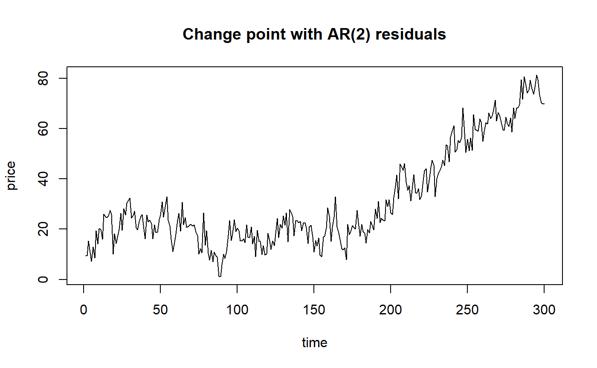
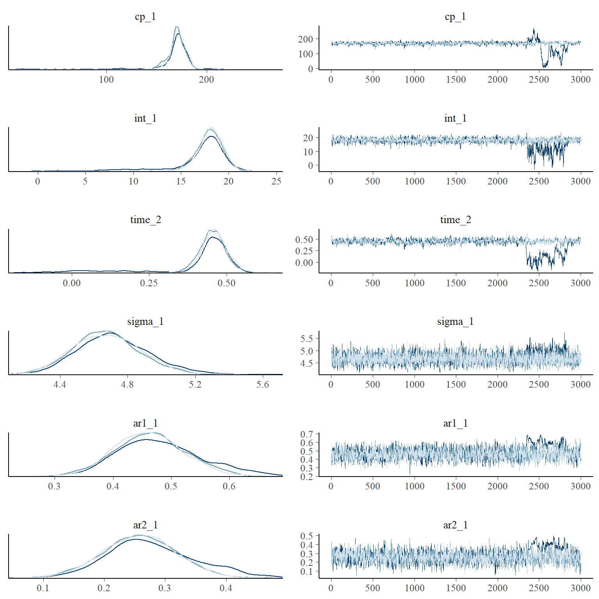
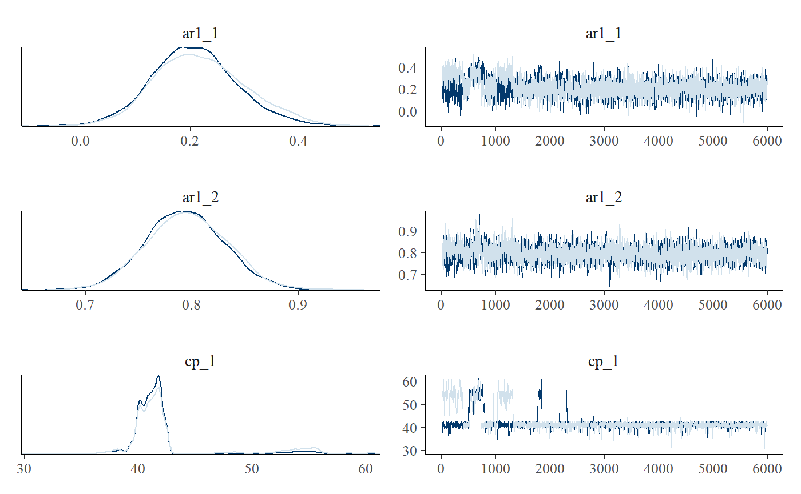

Time series change points with mcp
Jonas Kristoffer Lindeløv
2019-12-02
Source:vignettes/arma.Rmd
arma.RmdAutocorrelation is common in time series. You can specify N-order autoregressive models using ar(N) in the segment formulas. For most use cases, you just want to specify ar(1) in the first segment so that it “carries over” to other segments, just like all other intercepts in mcp. You can do regression on the autocorrelation parameters using ar(N, formula) and it behaves much like sigma to model variance.
Simple example
Let’s try and model the ex_ar dataset. Take at look at how it was simulated and scroll down to see another simulation.
library(mcp)
options(mc.cores = 3) # Speed up sampling!
plot(ex_ar, type="l", main = "Change point with AR(2) residuals")
We model this as a plateau (1) followed by a joined slope (0 + time) with (constant) second-order autoregressive residuals.
segments = list(
price ~ 1 + ar(2), # coefficients: int_1, ar1_1, ar2_1
~ 0 + time # time_2
)
fit = mcp(segments, ex_ar)We can summarise the inferred coefficients and see that the naming syntax for autoregressive intercepts is ar[order]_[segment]. For example, ar1_1 is the first-order autoregressive coefficient in segment 1. For slopes it will be ar[order]_[normal mcp name]. The first- and second-order AR coefficients were simulated to be 0.5 and 0.3 respectively in the ex_ar dataset, and these values are well recovered:
## Family: gaussian(link = 'identity')
## Iterations: 9000 from 3 chains.
## Segments:
## 1: price ~ 1 + ar(2)
## 2: price ~ 1 ~ 0 + time
##
## Population-level parameters:
## name mean lower upper Rhat n.eff ts_se
## ar1_1 0.460 0.351 0.578 1 2374 0.0123
## ar2_1 0.253 0.143 0.369 1 2661 0.0119
## cp_1 171.782 157.569 186.456 1 743 688.9403
## int_1 18.144 15.604 20.517 1 2565 5.5006
## sigma_1 4.672 4.317 5.063 1 5188 0.0582
## time_2 0.463 0.384 0.541 1 753 0.0164Notice that sigma in AR models describe innovations, i.e., the part of the residuals that are not explained by the autoregressive coefficients. As always, it is good to assess posteriors and convergence more directly:

Sometimes, the trace plot shows that the change point (cp_1) is not well identified with this model and data. As discussed in the article on tips, tricks, and debugging, you could combine a more informative prior with more samples (mcp(..., iter = 10000)), if this is a problem.
You can do hypothesis testing and model comparisons with autoregressive models, just as with any other model in mcp. Read more here or scroll down for an applied example.
Extended use
You can combine ar with any regression model and with varying change points. The autoregressive modeling applies to the residuals from the predicted fit as is common. These residuals are computed on a transformed scale for families with a non-identity link function (e.g., poisson(link = "log")). In time-series jargon, this is a dynamical regression model where the the “normal” regression parameters make up the deterministic structure. See further comments in the section on priors below.
Here is a varying slope change point with AR(1) residuals in both segments (it is carried over):
While the typical usage is AR(N), you can also specify how autocorrelation itself changes with \(x\) using ar(N, formula). If you want to model a steady change in the AR(1) “strength”, you can do ar(1, 1 + time). If you want to control the direction of the change, you simply put a positive-only prior the corresponding ar slope coefficient, e.g., ar_x_1 = "dnorm(0, 1) T(0, ). You have the full suite of mcp formula syntax available inside ar so you could easily do ar(3, rel(1) + I(x^2) + exp(x)). Make sure to use a positive-only prior (e.g., "dunif(0, 1)" if using log() and sqrt() since they fail for negative values.
The regression on the AR coefficients is applied to all orders. Raise an issue on GitHub if you see a use case for per-order control.
Simulating autocorrelated change point data
One side-effect of the mcp implementation of autocorrelation in the formulas is that you can infer when autocorrelation coefficients change.
Let’s simulate a change point in autocorrelation and see if we can infer it later. With mcp v0.2, you can simulate data by letting mcp generate the fitted predictions (dashed line below) and then add autocorrelated residuals generated by arima.sim():
# The model
segments = list(
y ~ 1 + x + ar(1), # Slope
~ 0 + x + ar(1) # Slope and relative increase
)
# Get fitted predictions
empty = mcp(segments, sample = FALSE)
data = tibble::tibble(
x = seq(0, 100, length.out = 500),
y = empty$simulate(x, cp_1 = 40,
int_1 = 20, x_1 = 1, x_2 = 1, # same slope
sigma_1 = NA, type = "fitted")
)
plot(data, type ="l", lty=2, main = "Autocorrelation change point")
# Add AR(1) residuals
set.seed(42)
ar_1 = arima.sim(list(ar = 0.2), n = 200, sd = 7) # Weak AR first
ar_2 = arima.sim(list(ar = 0.8), n = 300, sd = 7) # Then stronger AR
data$y = data$y + c(ar_1, ar_2)
# Plot it
lines(data, type = "l")
abline(v = 40)
… and we use a prior to equate the slopes of each segment (read more about using priors to equate parameters and define constants). Now let’s see if we can recover these parameters.
prior = list(x_2 = "x_1") # Set the two slopes equal
fit = mcp(segments, data, prior, iter = 6000)
# Show results
summary(fit)Let’s see the results:
## Family: gaussian(link = 'identity')
## Iterations: 18000 from 3 chains.
## Segments:
## 1: y ~ 1 + x + ar(1)
## 2: y ~ 1 ~ 0 + x + ar(1)
##
## Population-level parameters:
## name mean lower upper Rhat n.eff ts_se
## ar1_1 0.216 0.0633 0.388 1.00 289 3.88e-01
## ar1_2 0.795 0.7227 0.871 1.00 2125 8.16e-03
## cp_1 42.530 38.0843 55.685 1.01 58 5.15e+03
## int_1 19.984 18.0916 22.084 1.00 2403 7.63e+00
## sigma_1 7.040 6.5909 7.478 1.00 8173 8.98e-02
## x_1 0.987 0.9247 1.053 1.00 1631 8.56e-03
## x_2 0.987 0.9247 1.053 1.00 1631 8.56e-03We see that all parameters are well recovered. However, there is a dangerously low effective sample size for the change point (cp_1), indicating a potential problem. We can inspect this further using trace plots and posterior distributions. As is often the case, we see that the change point posterior is not well described by parameterized distribution. In this case, the change point posterior is a bit bimodal with some credence to a change point around 55 too. This is understandable if you look at the data.

As usual, we can test hypotheses and do model comparison (read more here). For example, what is the evidence that ar1_2 is more than 0.4 greater than ar1_1? Answer: It is quite compelling
## hypothesis mean lower upper p BF
## 1 ar1_1 + 0.4 - ar1_2 < 0 -0.1788844 -0.3445744 -0.0103212 0.9793889 47.51752Or how does this compare to a model with just the slope and no autocorrelation? Answer: quite strong with an elpd_diff/se_diff factor of around 6.
fit_null = mcp(list(y ~ 1 + x), data)
fit$loo = loo(fit)
fit_null$loo = loo(fit_null)
loo::loo_compare(fit$loo, fit_null$loo)## elpd_diff se_diff
## model1 0.0 0.0
## model2 -165.2 16.6Priors on autoregressive coefficients
The default prior on autoregressive intercepts is a dunif(-1, 1) to ensure a stationary series while being otherwise agnostic about the magnitude and direction of the autocorrelation. For most time series, you would expect a positive first-order autocorrelation, e.g., ar1_1 = "dunif(0, 1)" or even something like ar1_1 = "dnorm(0.5, 0.5) T(0, 1)". Read more about priors. Similarly, you would expect a smaller-but-still-positive second-order autocorrelation, e.g., ar2_1 = dunif(0, ar1_1).
Here is a complete list of the (default) priors in the model above:
## [,1]
## cp_1 "dunif(MINX, MAXX)"
## int_1 "dt(0, 3 * SDY, 3)"
## x_1 "dt(0, SDY / (MAXX - MINX), 3)"
## x_2 "x_1"
## sigma_1 "dnorm(0, SDY) T(0, )"
## ar1_1 "dunif(-1, 1)"
## ar1_2 "dunif(-1, 1)"Let’s inspect the priors for a more advanced AR model, since you would often have to inform these:
segments = list(
y ~ 1 + ar(2, 1 + x),
~ 0 + ar(1, rel(1) + I(x^2))
)
empty = mcp(segments, sample = FALSE)
cbind(empty$prior)## [,1]
## cp_1 "dunif(MINX, MAXX)"
## int_1 "dt(0, 3 * SDY, 3)"
## sigma_1 "dnorm(0, SDY) T(0, )"
## ar1_1 "dunif(-1, 1)"
## ar2_1 "dunif(-1, 1)"
## ar1_x_1 "dnorm(0, 1 / (MAXX - MINX))"
## ar2_x_1 "dnorm(0, 1 / (MAXX - MINX))"
## ar1_2 "dunif(-1, 1)"
## ar1_x_2_E2 "dnorm(0, 1 / (MAXX - MINX))"As with sigma, the link function for the autoregressive coefficient itself is "identity" though the autoregressive coefficient is computed from residuals using the link function provided in mcp(..., family = func(link = "something")). Because stationarity is important, careful consideration of the allowed and probable values (the prior) is necessary when going beyond simple absolute intercepts to avoid ar values outside [-1, 1].
Here are a few ways in which you may want to inform the ar parameters in the model above:
- As mentioned above, you may want to constrain second-order autocorrelations to
ar2_1 ~ dunif(0, ar1_1). - The relative change in intercept in the second segment (
ar1_2) can at most be -1 with the default prior. Ifar1_1was 0.8, this means that it can at most change to -0.2 in the next segment. Userel()with care. - Slopes can quickly make the parameter exceed the -1 and 1 boundaries, inducing non-stationarity. You would often want to constrain their magnitude to small slopes, taking into consideration the expected span of the x-axis over which this slope runs. The default prior on
ar-slopes is a 68% change that there is a change of 1 from the first to the last observation ("dnorm(0, 1 / (MAXX - MINX))") and you may want to, for example, suggest a shallow negative slope using"dnorm(0, 0.1 / (MAXX-MINX)) T( , 0)"